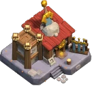
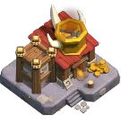
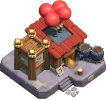
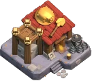

Clan Capital Districts
Updated: 26 August 2026 · By the Goblins Farm team
All 9 Clan Capital districts and the Capital Hall level each one needs.
Districts
 Capital PeakUnlocks at Capital Hall 1
Capital PeakUnlocks at Capital Hall 1

Barbarian CampUnlocks at Capital Hall 2 Wizard ValleyUnlocks at Capital Hall 3
Wizard ValleyUnlocks at Capital Hall 3
 Balloon LagoonUnlocks at Capital Hall 4
Balloon LagoonUnlocks at Capital Hall 4
 Builder's WorkshopUnlocks at Capital Hall 5
Builder's WorkshopUnlocks at Capital Hall 5

Dragon CliffsUnlocks at Capital Hall 6 Golem QuarryUnlocks at Capital Hall 7
Golem QuarryUnlocks at Capital Hall 7

Skeleton ParkUnlocks at Capital Hall 8
Goblin MinesUnlocks at Capital Hall 9Goblins Farm is not affiliated with, endorsed by, sponsored by, or specifically approved by Supercell. Clash of Clans is a trademark of Supercell Oy. This material is unofficial fan content produced under Supercell's Fan Content Policy. Game values change with every update; always verify in-game before committing an upgrade.